This was my first attempt at putting my research on beetroot and turmeric anthotypes to the test. In early September, finding a couple of hours of high UV was harder than I had anticipated, and so my processing times were definitely my most major mistake in this first test, but I did learn a lot from these failed attempts. In this test, I used beetroot, turmeric and classic cyanotype chemicals on cheese cloth, rayon and linen. The prints processed for about an hour in UV 4/5 level sun, and I used acetate printed with the typeface Lector FSL as my negatives. The cyanotype was applied according to packet instructions, and came out lovely and clear as usual. The beetroot juice was direct from tinned beetroots, without any additional fixatives. The colour on these is gorgeous, but they did not process for nearly long enough, and do not even have a whisper of a print on them.
For the turmeric fabric, I simply mixed turmeric and warm water, then brushed this across the fabric. You can see very subtle beginnings of a print on these, and the yellow colour is just amazing! The rayon seems to have come out the most vivid in the turmeric, and I like the slightly unusual lighter blue that is produced on the rayon with the cyanotype. I was hoping to use something light and flowy so these results bode well. I definitely need to print with a heavier typeface for the line work to be clear on the beetroot and turmeric. I decided to test more rayon-like fabrics (ie. georgette and chiffon) to see if I could find another (maybe cheaper?) alternative to work with. Rayon is a semi-natural fibre, meaning that it begins with natural fibres, but is then processed chemically, which I think is why the cyanotype is having a harder time sticking to it, and is thus coming out lighter. I decided to look for other synthetic fabrics to try to achieve this colour again.
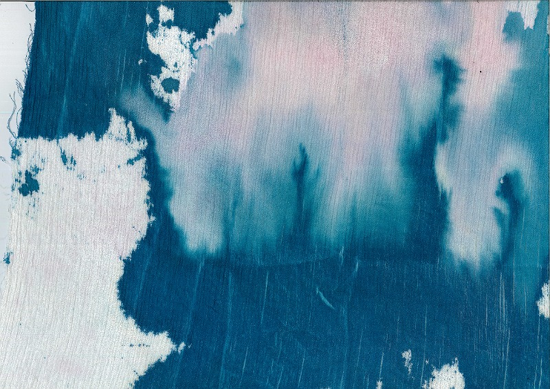
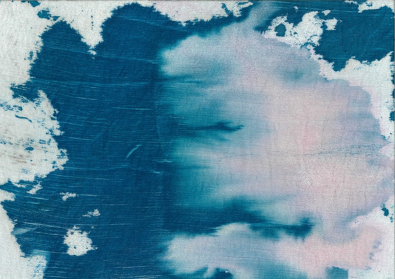
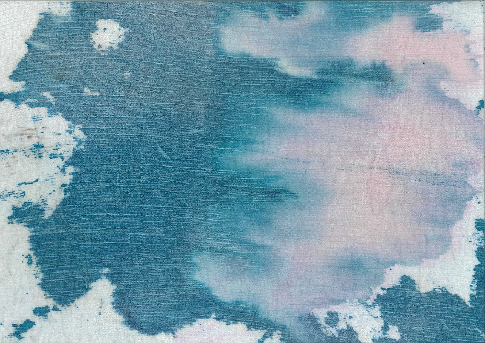
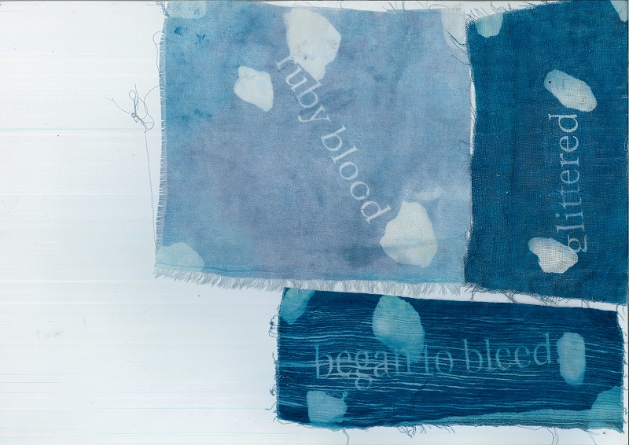
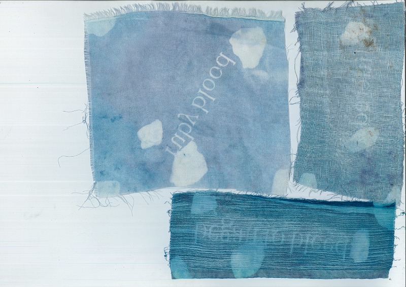
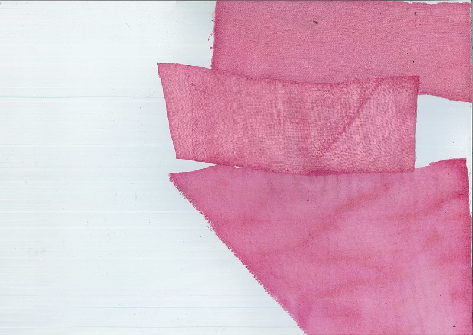
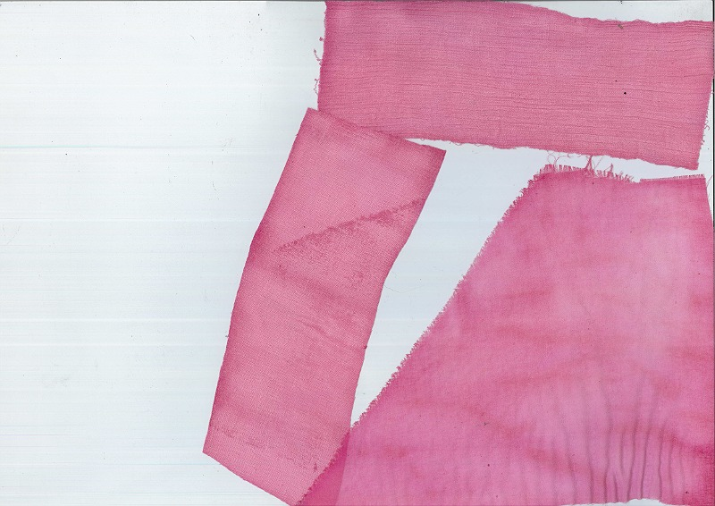
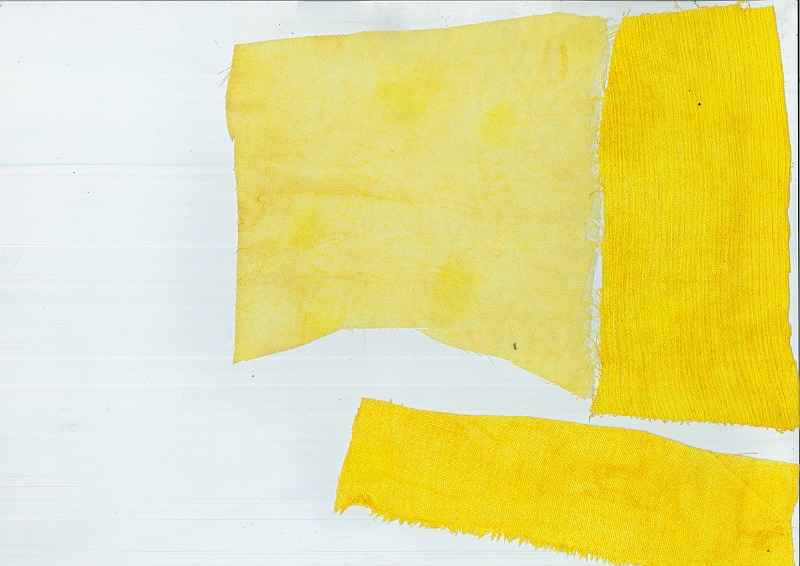
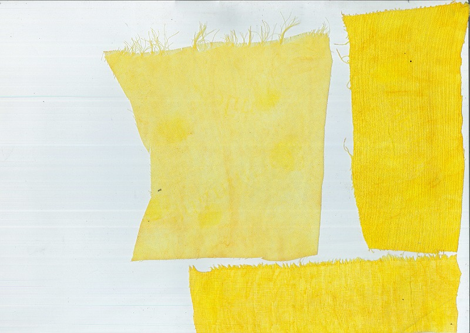
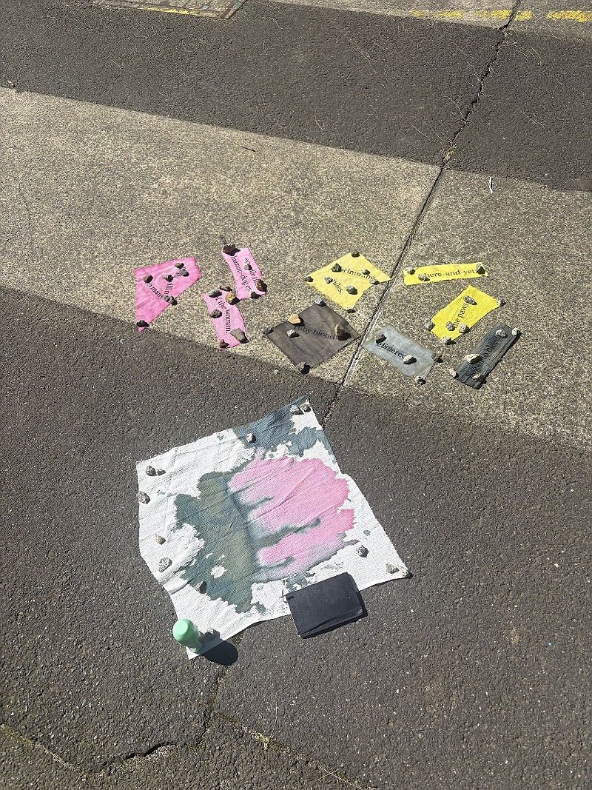
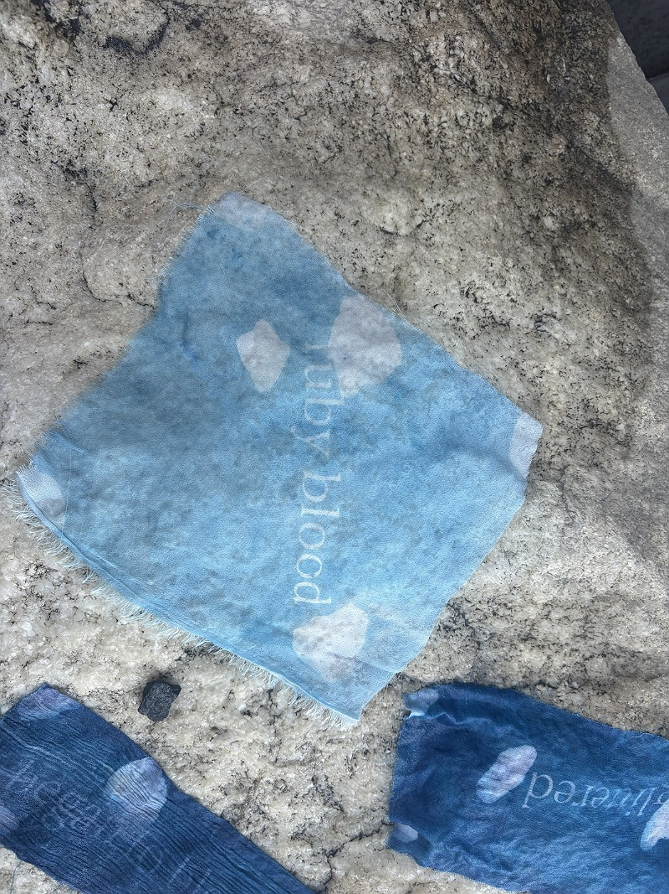
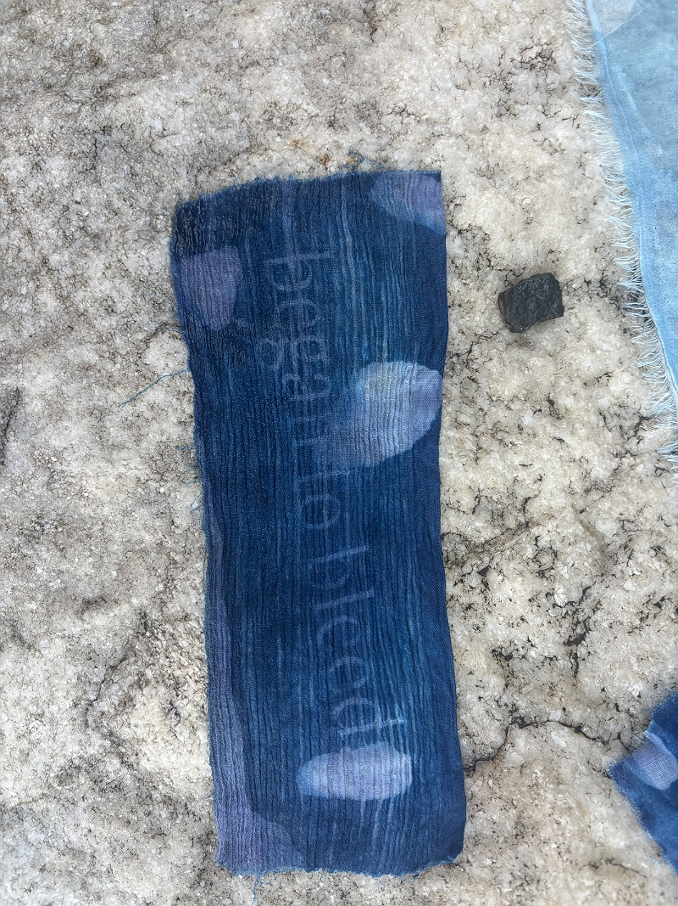
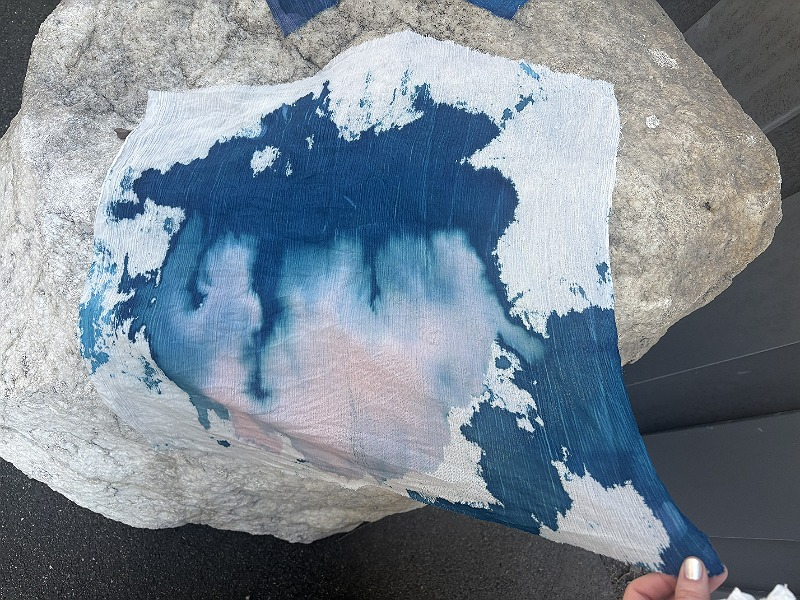
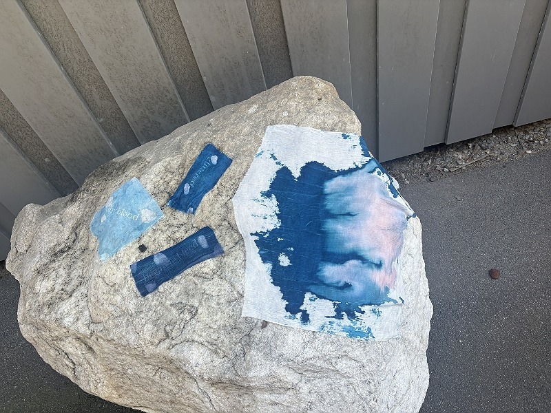
make space!